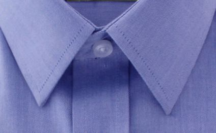
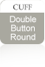
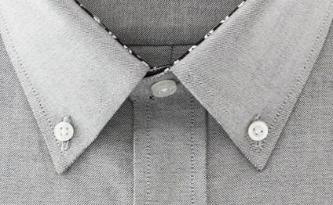
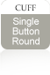
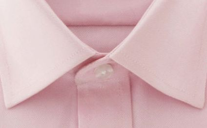
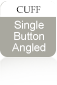
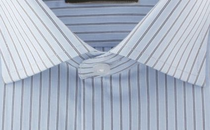
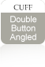
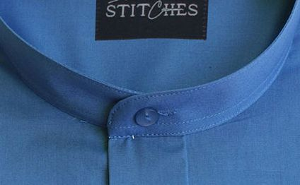
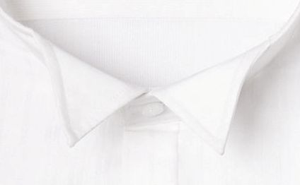

-

Classic Collar:
Commonly known as the Straight collar, this type of collar is an incredibly universal and versatile collar style. It works great professionally or casually and goes well with a variety of tie knots and sizes. It is distinguishable by the small spread between the collar points of approximately 8 cm. This type of collar is excellent for men with fuller and round shaped face as it works to elongate the face.
View All Shirts With Classic CollarPerfect With:


-

Buttoned Down Collar:
This dapper shirt collar is similar to the Classic collar but has small buttons on both points, which are used to secure the collar to the shirt firmly. This collar is usually worn casually or with a tie for a dressy look, however it is the least formal of all collar choices.
View All Shirts With Buttoned Down CollarPerfect With:

-

Spread Collar:
The Spread collar is a to-go collar style appropriate for any occasion. We love it because it looks good with any pattern, color and fabric, casually or dressed. The collars points are spread out approx. 10 cm apart, revealing more of the upper shirt area. These collars are excellent for men with a medium to long shaped face as it helps spread out the facial features.
View All Shirts With Spread CollarPerfect With:

-

Wide Spread Collar:
Our Wide Spread collar is a bolder take on the regular spread collar. The points of the collar are pulled back to the side (14 cm apart) to allow full view of the necktie knot. This is ideal for fuller tie knots and can also be left unbuttoned for a classy look.
View All Shirts With Wide Spread CollarPerfect With:
 -

Banded Collar:
This collar consists only of the collar band, which stands straight up without the turn down collar points. At 16 Stitches, the banded collars are made to a height of 3 cm. They are never worn with a tie and go well with linens.
View All Shirts With Banded CollarPerfect With:

-

Wing Tip Collar:
Also known as the black tie collars, these are worn with the tuxedo. It has a collar band with two small "wings" at the front which are tucked behind the bow-tie (with no turn down points). Paired either with a bow tie or an ascot, these are the most formal of all collar types and are preserved particularly for very formal occasions.
View All Shirts With Wing Tip CollarPerfect With: